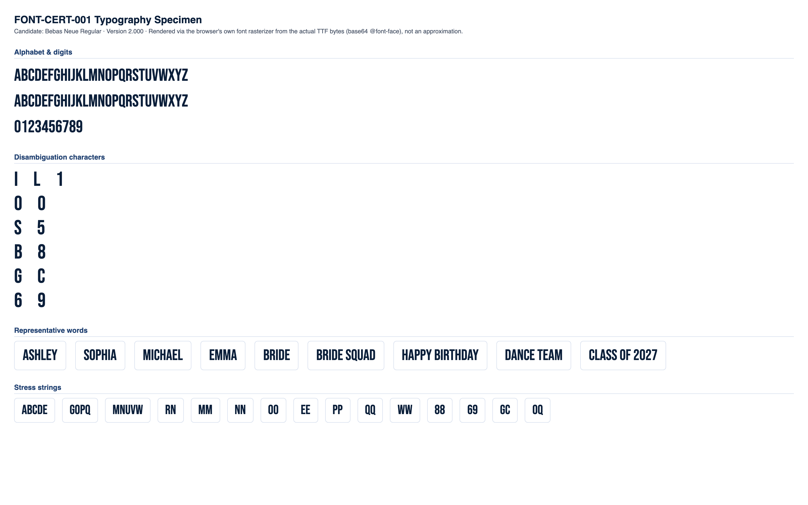

CONDITIONAL PASS
Classification and the feedback below are computed at the mid-range letter height for each stone size (the representative case). Full min/mid/max data is shown in section 4.
No blocking issues found.
Min and max height produce no more collisions or low-stone-count findings than mid height.
Medium
No blocking production failures, but 14 refinement note(s) were found (12 actionable item(s) below) -- readability, spacing, or anatomy concerns that would need addressing for production quality.
| Status | Check | Category | Detail |
|---|---|---|---|
| PASS | Successful TTF parsing | parsing | opentype.js parsed the file without error. |
| PASS | Outline format | structure | TrueType (quadratic) outlines. sfnt signature "0x00010000", opentype.js outlinesFormat="truetype". |
| PASS | Quadratic TrueType outlines | structure | TrueType file with quadratic curves confirmed: 53 curve commands found across 10 sampled glyphs. |
| PASS | unitsPerEm | structure | unitsPerEm = 1000 |
| PASS | Glyph count | structure | 508 glyphs (font.numGlyphs=508). |
| PASS | .notdef at glyph index 0 | structure | .notdef confirmed at glyph index 0. |
| PASS | Unicode cmap coverage | coverage | cmap maps 461 Unicode code point(s) to glyphs. |
| PASS | Required character coverage (A-Z, a-z, 0-9, space, . , ' - ! ?) | coverage | All 69 required characters map to a real glyph (glyph index != 0). |
| PASS | Required sfnt tables | structure | All required tables present: cmap, glyf, head, hhea, hmtx, loca, maxp, name, post, OS/2. |
| PASS | Family / subfamily / version / PostScript naming | naming | family="Bebas Neue", subfamily="Regular", version="Version 2.000", postScriptName="BebasNeue-Regular". |
| PASS | Ascender, descender, line gap, horizontal metrics | metrics | ascender=900, descender=-300, hhea.lineGap=0, advanceWidthMax=845, numberOfHMetrics=492 (hmtx table present: true). |
| PASS | Invalid or empty glyphs | geometry | No mapped, non-whitespace, non-invisible-by-design character resolves to an empty outline. |
| PASS | Open contours | geometry | Every required-character contour closes explicitly (an explicit "Z"/closepath command) or implicitly (its final point returns to its starting point). |
| PASS | Self-intersections | geometry | Strict transversal-crossing test (deduplicated, 16-segments-per-curve flattened outline, 69 required characters) found no self- or cross-contour crossings. |
| WARNING | Zero-length or duplicate outline segments | geometry | 31 of 69 character(s) contain 243 raw zero-length draw command(s) total (a command whose endpoint exactly duplicates the current pen position -- draws nothing, harmless no-op, but real source-file redundancy), 0 duplicate outline segments. Not production-blocking: these commands have no visual or geometric effect. Per-character counts: "B" (zero-length:8, duplicate:0), "C" (zero-length:8, duplicate:0), "D" (zero-length:4, duplicate:0), "G" (zero-length:8, duplicate:0), "J" (zero-length:4, duplicate:0), "O" (zero-length:8, duplicate:0), "P" (zero-length:4, duplicate:0), "Q" (zero-length:11, duplicate:0), +23 more. |
| PASS | Coordinates outside valid TrueType ranges | geometry | All required-character outline coordinates fall within the signed 16-bit range (-32768 to 32767). |
| PASS | Inconsistent or suspicious advance widths / side bearings | metrics | Advance widths for required characters cluster reasonably around the median (400 units). |
Rendered from the actual source TTF via a base64-embedded @font-face rule (typography), and through the real production pipeline FontManager → OpenTypeProvider → GeometryEngine.generateTextLayout() → StoneLayout (rhinestone), at this milestone's own physical letter-height range per stone size:
| Stone size | Min | Mid (representative) | Max |
|---|---|---|---|
| SS6 | 35mm | 42.5mm | 50mm |
| SS10 | 45mm | 52.5mm | 60mm |
| SS16 | 65mm | 77.5mm | 90mm |
| SS20 | 80mm | 95mm | 110mm |
| SS30 | 106mm | 108.5mm | 111mm |


Successful layout generation (a non-empty StoneLayout with no collisions) is not the same as visual readability -- see each height variant's readability metrics below for objective, threshold-based findings.
| SS6 | text height: 35mm |
|---|---|
| SS10 | text height: 45mm |
| SS16 | text height: 65mm |
| SS20 | text height: 80mm |
| SS30 | text height: 106mm |
| Pair | Size | Stone counts | Chamfer distance | Result |
|---|---|---|---|---|
| "I" vs "l" | SS16 | 21 / 26 | 0.0802 | WARNING |
| "l" vs "1" | SS16 | 26 / 25 | 0.1105 | PASS |
| "I" vs "1" | SS16 | 21 / 25 | 0.0731 | WARNING |
| "O" vs "0" | SS16 | 42 / 42 | 0.0000 | WARNING |
| "S" vs "5" | SS16 | 37 / 38 | 0.0357 | WARNING |
| "B" vs "8" | SS16 | 43 / 41 | 0.0347 | WARNING |
| "G" vs "C" | SS16 | 40 / 39 | 0.0204 | WARNING |
| "Q" vs "O" | SS16 | 44 / 42 | 0.0386 | WARNING |
| "e" vs "c" | SS16 | 31 / 39 | 0.0485 | WARNING |
| "e" vs "o" | SS16 | 31 / 42 | 0.0506 | WARNING |
| "c" vs "o" | SS16 | 39 / 42 | 0.0279 | WARNING |
| "6" vs "9" | SS16 | 42 / 42 | 0.0193 | WARNING |
Threshold: 0.09 (normalized, unit-height point clouds). Below threshold = flagged as visually similar.
| Char | SS6 | SS10 | SS16 | SS20 | SS30 |
|---|---|---|---|---|---|
| "A" | 35 | 32 | 35 | 38 | 36 |
| "B" | 43 | 41 | 43 | 43 | 41 |
| "C" | 40 | 37 | 39 | 40 | 38 |
| "D" | 45 | 43 | 43 | 46 | 45 |
| "E" | 30 | 31 | 31 | 34 | 32 |
| "F" | 27 | 26 | 28 | 27 | 28 |
| "G" | 45 | 42 | 40 | 45 | 43 |
| "H" | 40 | 39 | 38 | 43 | 42 |
| "I" | 22 | 22 | 21 | 24 | 23 |
| "J" | 22 | 22 | 22 | 23 | 24 |
| "K" | 39 | 38 | 38 | 41 | 41 |
| "L" | 26 | 25 | 26 | 28 | 28 |
| "M" | 59 | 53 | 57 | 60 | 60 |
| "N" | 45 | 42 | 45 | 48 | 45 |
| "O" | 45 | 43 | 42 | 46 | 45 |
| "P" | 34 | 32 | 33 | 34 | 33 |
| "Q" | 47 | 44 | 44 | 48 | 46 |
| "R" | 42 | 40 | 42 | 43 | 40 |
| "S" | 38 | 38 | 37 | 40 | 38 |
| "T" | 28 | 25 | 26 | 28 | 28 |
| "U" | 44 | 42 | 45 | 45 | 44 |
| "V" | 36 | 33 | 36 | 37 | 39 |
| "W" | 57 | 54 | 55 | 61 | 60 |
| "X" | 37 | 34 | 37 | 37 | 37 |
| "Y" | 30 | 29 | 28 | 31 | 29 |
| "Z" | 32 | 32 | 31 | 35 | 34 |
| "a" | 35 | 32 | 35 | 38 | 36 |
| "b" | 43 | 41 | 43 | 43 | 41 |
| "c" | 40 | 37 | 39 | 40 | 38 |
| "d" | 45 | 43 | 43 | 46 | 45 |
| "e" | 30 | 31 | 31 | 34 | 32 |
| "f" | 27 | 26 | 28 | 27 | 28 |
| "g" | 45 | 42 | 40 | 45 | 43 |
| "h" | 40 | 39 | 38 | 43 | 42 |
| "i" | 22 | 22 | 21 | 24 | 23 |
| "j" | 22 | 22 | 22 | 23 | 24 |
| "k" | 39 | 38 | 38 | 41 | 41 |
| "l" | 26 | 25 | 26 | 28 | 28 |
| "m" | 59 | 53 | 57 | 60 | 60 |
| "n" | 45 | 42 | 45 | 48 | 45 |
| "o" | 45 | 43 | 42 | 46 | 45 |
| "p" | 34 | 32 | 33 | 34 | 33 |
| "q" | 47 | 44 | 44 | 48 | 46 |
| "r" | 42 | 40 | 42 | 43 | 40 |
| "s" | 38 | 38 | 37 | 40 | 38 |
| "t" | 28 | 25 | 26 | 28 | 28 |
| "u" | 44 | 42 | 45 | 45 | 44 |
| "v" | 36 | 33 | 36 | 37 | 39 |
| "w" | 57 | 54 | 55 | 61 | 60 |
| "x" | 37 | 34 | 37 | 37 | 37 |
| "y" | 30 | 29 | 28 | 31 | 29 |
| "z" | 32 | 32 | 31 | 35 | 34 |
| "0" | 45 | 43 | 42 | 46 | 45 |
| "1" | 26 | 22 | 25 | 25 | 24 |
| "2" | 39 | 35 | 38 | 39 | 38 |
| "3" | 39 | 36 | 38 | 41 | 37 |
| "4" | 31 | 28 | 29 | 33 | 33 |
| "5" | 41 | 37 | 38 | 43 | 39 |
| "6" | 45 | 42 | 42 | 44 | 42 |
| "7" | 28 | 28 | 27 | 30 | 29 |
| "8" | 45 | 42 | 41 | 44 | 41 |
| "9" | 45 | 42 | 42 | 44 | 42 |
Cell values are stone count per glyph at that stone size ("coll." = colliding stone pairs found).
| Word | SS6 | SS10 | SS16 | SS20 | SS30 |
|---|---|---|---|---|---|
| Ashley | 198 stones, min spacing 2.04mm, 8 cluster(s) | 193 stones, min spacing 2.81mm, 6 cluster(s) | 194 stones, min spacing 4.05mm, 10 cluster(s) | 213 stones, min spacing 4.70mm, 8 cluster(s) | 204 stones, min spacing 6.40mm, 18 cluster(s) |
| Sophia | 213 stones, min spacing 2.04mm, 7 cluster(s) | 203 stones, min spacing 2.80mm, 4 cluster(s) | 201 stones, min spacing 4.03mm, 9 cluster(s) | 222 stones, min spacing 4.70mm, 11 cluster(s) | 216 stones, min spacing 6.40mm, 16 cluster(s) |
| Michael | 252 stones, min spacing 2.04mm, 7 cluster(s) | 239 stones, min spacing 2.81mm, 6 cluster(s) | 247 stones, min spacing 4.01mm, 10 cluster(s) | 267 stones, min spacing 4.70mm, 12 cluster(s) | 259 stones, min spacing 6.43mm, 15 cluster(s) |
| Emma | 183 stones, min spacing 2.10mm, 1 cluster(s) | 169 stones, min spacing 2.89mm, 7 cluster(s) | 179 stones, min spacing 4.09mm, 3 cluster(s) | 192 stones, min spacing 4.70mm, 7 cluster(s) | 188 stones, min spacing 6.48mm, 8 cluster(s) |
| Bride | 182 stones, min spacing 2.12mm, 4 cluster(s) | 177 stones, min spacing 2.83mm, 4 cluster(s) | 180 stones, min spacing 4.02mm, 5 cluster(s) | 190 stones, min spacing 4.75mm, 14 cluster(s) | 181 stones, min spacing 6.41mm, 19 cluster(s) |
| Bride Squad | 390 stones, min spacing 2.06mm, 5 cluster(s) | 375 stones, min spacing 2.83mm, 7 cluster(s) | 381 stones, min spacing 4.02mm, 8 cluster(s) | 405 stones, min spacing 4.70mm, 23 cluster(s) | 389 stones, min spacing 6.40mm, 27 cluster(s) |
| Happy Birthday | 457 stones, min spacing 2.02mm, 15 cluster(s) | 433 stones, min spacing 2.80mm, 9 cluster(s) | 440 stones, min spacing 4.01mm, 20 cluster(s) | 475 stones, min spacing 4.70mm, 34 cluster(s) | 457 stones, min spacing 6.41mm, 42 cluster(s) |
| Dance Team | 345 stones, min spacing 2.02mm, 7 cluster(s) | 325 stones, min spacing 2.81mm, 13 cluster(s) | 340 stones, min spacing 4.01mm, 9 cluster(s) | 363 stones, min spacing 4.70mm, 19 cluster(s) | 352 stones, min spacing 6.43mm, 19 cluster(s) |
| Class of 2027 | 399 stones, min spacing 2.04mm, 7 cluster(s) | 376 stones, min spacing 2.80mm, 9 cluster(s) | 385 stones, min spacing 4.01mm, 9 cluster(s) | 408 stones, min spacing 4.70mm, 18 cluster(s) | 397 stones, min spacing 6.40mm, 21 cluster(s) |
No glyph/size combination falls below the minimum meaningful stone count.
No counter-bearing glyph/size combination falls below the counter-bearing stone-count floor.
| Pair | Size | Chamfer distance | Stone counts |
|---|---|---|---|
| "I" vs "l" | SS6 | 0.0752 | 22 / 26 |
| "I" vs "1" | SS6 | 0.0726 | 22 / 26 |
| "O" vs "0" | SS6 | 0.0000 | 45 / 45 |
| "S" vs "5" | SS6 | 0.0348 | 38 / 41 |
| "B" vs "8" | SS6 | 0.0312 | 43 / 45 |
| "G" vs "C" | SS6 | 0.0194 | 45 / 40 |
| "Q" vs "O" | SS6 | 0.0383 | 47 / 45 |
| "e" vs "c" | SS6 | 0.0514 | 30 / 40 |
| "e" vs "o" | SS6 | 0.0510 | 30 / 45 |
| "c" vs "o" | SS6 | 0.0279 | 40 / 45 |
| "6" vs "9" | SS6 | 0.0193 | 45 / 45 |
| "I" vs "l" | SS10 | 0.0774 | 22 / 25 |
| "I" vs "1" | SS10 | 0.0662 | 22 / 22 |
| "O" vs "0" | SS10 | 0.0000 | 43 / 43 |
| "S" vs "5" | SS10 | 0.0397 | 38 / 37 |
| "B" vs "8" | SS10 | 0.0392 | 41 / 42 |
| "G" vs "C" | SS10 | 0.0182 | 42 / 37 |
| "Q" vs "O" | SS10 | 0.0347 | 44 / 43 |
| "e" vs "c" | SS10 | 0.0496 | 31 / 37 |
| "e" vs "o" | SS10 | 0.0501 | 31 / 43 |
| "c" vs "o" | SS10 | 0.0187 | 37 / 43 |
| "6" vs "9" | SS10 | 0.0234 | 42 / 42 |
| "I" vs "l" | SS16 | 0.0802 | 21 / 26 |
| "I" vs "1" | SS16 | 0.0731 | 21 / 25 |
| "O" vs "0" | SS16 | 0.0000 | 42 / 42 |
| "S" vs "5" | SS16 | 0.0357 | 37 / 38 |
| "B" vs "8" | SS16 | 0.0347 | 43 / 41 |
| "G" vs "C" | SS16 | 0.0204 | 40 / 39 |
| "Q" vs "O" | SS16 | 0.0386 | 44 / 42 |
| "e" vs "c" | SS16 | 0.0485 | 31 / 39 |
| "e" vs "o" | SS16 | 0.0506 | 31 / 42 |
| "c" vs "o" | SS16 | 0.0279 | 39 / 42 |
| "6" vs "9" | SS16 | 0.0193 | 42 / 42 |
| "I" vs "l" | SS20 | 0.0764 | 24 / 28 |
| "I" vs "1" | SS20 | 0.0659 | 24 / 25 |
| "O" vs "0" | SS20 | 0.0000 | 46 / 46 |
| "S" vs "5" | SS20 | 0.0372 | 40 / 43 |
| "B" vs "8" | SS20 | 0.0287 | 43 / 44 |
| "G" vs "C" | SS20 | 0.0166 | 45 / 40 |
| "Q" vs "O" | SS20 | 0.0331 | 48 / 46 |
| "e" vs "c" | SS20 | 0.0482 | 34 / 40 |
| "e" vs "o" | SS20 | 0.0505 | 34 / 46 |
| "c" vs "o" | SS20 | 0.0230 | 40 / 46 |
| "6" vs "9" | SS20 | 0.0249 | 44 / 44 |
| "I" vs "l" | SS30 | 0.0780 | 23 / 28 |
| "I" vs "1" | SS30 | 0.0707 | 23 / 24 |
| "O" vs "0" | SS30 | 0.0000 | 45 / 45 |
| "S" vs "5" | SS30 | 0.0364 | 38 / 39 |
| "B" vs "8" | SS30 | 0.0293 | 41 / 41 |
| "G" vs "C" | SS30 | 0.0178 | 43 / 38 |
| "Q" vs "O" | SS30 | 0.0371 | 46 / 45 |
| "e" vs "c" | SS30 | 0.0434 | 32 / 38 |
| "e" vs "o" | SS30 | 0.0483 | 32 / 45 |
| "c" vs "o" | SS30 | 0.0216 | 38 / 45 |
| "6" vs "9" | SS30 | 0.0290 | 42 / 42 |
| Size | Diameter | Scale | Rendered stone size | Result |
|---|---|---|---|---|
| SS6 | 2mm | 5px/mm | 10px | PASS |
| SS10 | 2.8mm | 4px/mm | 11.2px | PASS |
| SS16 | 4mm | 3.5px/mm | 14px | PASS |
| SS20 | 4.7mm | 3px/mm | 14.1px | PASS |
| SS30 | 6.4mm | 2.5px/mm | 16px | PASS |
| SS6 | text height: 42.5mm |
|---|---|
| SS10 | text height: 52.5mm |
| SS16 | text height: 77.5mm |
| SS20 | text height: 95mm |
| SS30 | text height: 108.5mm |
| Pair | Size | Stone counts | Chamfer distance | Result |
|---|---|---|---|---|
| "I" vs "l" | SS16 | 26 / 30 | 0.0755 | WARNING |
| "l" vs "1" | SS16 | 30 / 27 | 0.1093 | PASS |
| "I" vs "1" | SS16 | 26 / 27 | 0.0780 | WARNING |
| "O" vs "0" | SS16 | 54 / 54 | 0.0000 | WARNING |
| "S" vs "5" | SS16 | 45 / 47 | 0.0321 | WARNING |
| "B" vs "8" | SS16 | 52 / 53 | 0.0188 | WARNING |
| "G" vs "C" | SS16 | 53 / 47 | 0.0188 | WARNING |
| "Q" vs "O" | SS16 | 56 / 54 | 0.0308 | WARNING |
| "e" vs "c" | SS16 | 39 / 47 | 0.0401 | WARNING |
| "e" vs "o" | SS16 | 39 / 54 | 0.0443 | WARNING |
| "c" vs "o" | SS16 | 47 / 54 | 0.0209 | WARNING |
| "6" vs "9" | SS16 | 52 / 52 | 0.0175 | WARNING |
Threshold: 0.09 (normalized, unit-height point clouds). Below threshold = flagged as visually similar.
| Char | SS6 | SS10 | SS16 | SS20 | SS30 |
|---|---|---|---|---|---|
| "A" | 48 | 41 | 43 | 46 | 36 |
| "B" | 55 | 50 | 52 | 55 | 44 |
| "C" | 49 | 44 | 47 | 49 | 39 |
| "D" | 55 | 50 | 53 | 56 | 47 |
| "E" | 42 | 36 | 39 | 42 | 35 |
| "F" | 35 | 30 | 32 | 35 | 30 |
| "G" | 55 | 49 | 53 | 55 | 45 |
| "H" | 51 | 46 | 51 | 53 | 43 |
| "I" | 30 | 24 | 26 | 27 | 23 |
| "J" | 29 | 27 | 30 | 30 | 24 |
| "K" | 50 | 43 | 47 | 50 | 41 |
| "L" | 34 | 29 | 30 | 32 | 27 |
| "M" | 77 | 66 | 71 | 74 | 61 |
| "N" | 59 | 51 | 53 | 59 | 48 |
| "O" | 55 | 50 | 54 | 57 | 46 |
| "P" | 44 | 39 | 40 | 43 | 34 |
| "Q" | 58 | 53 | 56 | 59 | 49 |
| "R" | 55 | 46 | 51 | 54 | 43 |
| "S" | 47 | 43 | 45 | 49 | 40 |
| "T" | 33 | 29 | 30 | 34 | 26 |
| "U" | 55 | 48 | 52 | 55 | 46 |
| "V" | 47 | 41 | 43 | 46 | 39 |
| "W" | 80 | 69 | 71 | 76 | 60 |
| "X" | 47 | 42 | 44 | 45 | 38 |
| "Y" | 36 | 32 | 35 | 39 | 31 |
| "Z" | 40 | 39 | 40 | 40 | 33 |
| "a" | 48 | 41 | 43 | 46 | 36 |
| "b" | 55 | 50 | 52 | 55 | 44 |
| "c" | 49 | 44 | 47 | 49 | 39 |
| "d" | 55 | 50 | 53 | 56 | 47 |
| "e" | 42 | 36 | 39 | 42 | 35 |
| "f" | 35 | 30 | 32 | 35 | 30 |
| "g" | 55 | 49 | 53 | 55 | 45 |
| "h" | 51 | 46 | 51 | 53 | 43 |
| "i" | 30 | 24 | 26 | 27 | 23 |
| "j" | 29 | 27 | 30 | 30 | 24 |
| "k" | 50 | 43 | 47 | 50 | 41 |
| "l" | 34 | 29 | 30 | 32 | 27 |
| "m" | 77 | 66 | 71 | 74 | 61 |
| "n" | 59 | 51 | 53 | 59 | 48 |
| "o" | 55 | 50 | 54 | 57 | 46 |
| "p" | 44 | 39 | 40 | 43 | 34 |
| "q" | 58 | 53 | 56 | 59 | 49 |
| "r" | 55 | 46 | 51 | 54 | 43 |
| "s" | 47 | 43 | 45 | 49 | 40 |
| "t" | 33 | 29 | 30 | 34 | 26 |
| "u" | 55 | 48 | 52 | 55 | 46 |
| "v" | 47 | 41 | 43 | 46 | 39 |
| "w" | 80 | 69 | 71 | 76 | 60 |
| "x" | 47 | 42 | 44 | 45 | 38 |
| "y" | 36 | 32 | 35 | 39 | 31 |
| "z" | 40 | 39 | 40 | 40 | 33 |
| "0" | 55 | 50 | 54 | 57 | 46 |
| "1" | 30 | 27 | 27 | 30 | 24 |
| "2" | 46 | 43 | 46 | 48 | 39 |
| "3" | 48 | 42 | 45 | 47 | 38 |
| "4" | 39 | 35 | 37 | 40 | 33 |
| "5" | 52 | 45 | 47 | 48 | 43 |
| "6" | 54 | 49 | 52 | 57 | 44 |
| "7" | 35 | 32 | 35 | 37 | 29 |
| "8" | 54 | 49 | 53 | 56 | 42 |
| "9" | 54 | 49 | 52 | 55 | 44 |
Cell values are stone count per glyph at that stone size ("coll." = colliding stone pairs found).
| Word | SS6 | SS10 | SS16 | SS20 | SS30 |
|---|---|---|---|---|---|
| Ashley | 258 stones, min spacing 2.00mm, 10 cluster(s) | 227 stones, min spacing 2.83mm, 13 cluster(s) | 241 stones, min spacing 4.04mm, 12 cluster(s) | 260 stones, min spacing 4.72mm, 16 cluster(s) | 212 stones, min spacing 6.40mm, 18 cluster(s) |
| Sophia | 275 stones, min spacing 2.05mm, 8 cluster(s) | 243 stones, min spacing 2.80mm, 10 cluster(s) | 259 stones, min spacing 4.04mm, 8 cluster(s) | 275 stones, min spacing 4.72mm, 15 cluster(s) | 221 stones, min spacing 6.40mm, 22 cluster(s) |
| Michael | 331 stones, min spacing 2.01mm, 11 cluster(s) | 286 stones, min spacing 2.83mm, 11 cluster(s) | 307 stones, min spacing 4.04mm, 10 cluster(s) | 323 stones, min spacing 4.72mm, 18 cluster(s) | 264 stones, min spacing 6.40mm, 18 cluster(s) |
| Emma | 244 stones, min spacing 2.01mm, 9 cluster(s) | 209 stones, min spacing 2.85mm, 8 cluster(s) | 224 stones, min spacing 4.11mm, 9 cluster(s) | 236 stones, min spacing 4.79mm, 11 cluster(s) | 193 stones, min spacing 6.40mm, 6 cluster(s) |
| Bride | 237 stones, min spacing 2.03mm, 7 cluster(s) | 206 stones, min spacing 2.89mm, 8 cluster(s) | 221 stones, min spacing 4.05mm, 10 cluster(s) | 234 stones, min spacing 4.75mm, 10 cluster(s) | 192 stones, min spacing 6.40mm, 15 cluster(s) |
| Bride Squad | 500 stones, min spacing 2.03mm, 12 cluster(s) | 441 stones, min spacing 2.80mm, 16 cluster(s) | 470 stones, min spacing 4.05mm, 17 cluster(s) | 499 stones, min spacing 4.73mm, 19 cluster(s) | 409 stones, min spacing 6.40mm, 27 cluster(s) |
| Happy Birthday | 586 stones, min spacing 2.00mm, 24 cluster(s) | 515 stones, min spacing 2.80mm, 34 cluster(s) | 550 stones, min spacing 4.04mm, 26 cluster(s) | 588 stones, min spacing 4.72mm, 34 cluster(s) | 470 stones, min spacing 6.44mm, 48 cluster(s) |
| Dance Team | 453 stones, min spacing 2.01mm, 17 cluster(s) | 393 stones, min spacing 2.80mm, 20 cluster(s) | 418 stones, min spacing 4.01mm, 18 cluster(s) | 448 stones, min spacing 4.72mm, 21 cluster(s) | 361 stones, min spacing 6.40mm, 24 cluster(s) |
| Class of 2027 | 496 stones, min spacing 2.01mm, 15 cluster(s) | 444 stones, min spacing 2.86mm, 14 cluster(s) | 475 stones, min spacing 4.05mm, 15 cluster(s) | 505 stones, min spacing 4.73mm, 16 cluster(s) | 405 stones, min spacing 6.40mm, 29 cluster(s) |
No glyph/size combination falls below the minimum meaningful stone count.
No counter-bearing glyph/size combination falls below the counter-bearing stone-count floor.
| Pair | Size | Chamfer distance | Stone counts |
|---|---|---|---|
| "I" vs "l" | SS6 | 0.0695 | 30 / 34 |
| "I" vs "1" | SS6 | 0.0713 | 30 / 30 |
| "O" vs "0" | SS6 | 0.0000 | 55 / 55 |
| "S" vs "5" | SS6 | 0.0311 | 47 / 52 |
| "B" vs "8" | SS6 | 0.0189 | 55 / 54 |
| "G" vs "C" | SS6 | 0.0162 | 55 / 49 |
| "Q" vs "O" | SS6 | 0.0319 | 58 / 55 |
| "e" vs "c" | SS6 | 0.0408 | 42 / 49 |
| "e" vs "o" | SS6 | 0.0419 | 42 / 55 |
| "c" vs "o" | SS6 | 0.0213 | 49 / 55 |
| "6" vs "9" | SS6 | 0.0233 | 54 / 54 |
| "I" vs "l" | SS10 | 0.0828 | 24 / 29 |
| "I" vs "1" | SS10 | 0.0792 | 24 / 27 |
| "O" vs "0" | SS10 | 0.0000 | 50 / 50 |
| "S" vs "5" | SS10 | 0.0376 | 43 / 45 |
| "B" vs "8" | SS10 | 0.0186 | 50 / 49 |
| "G" vs "C" | SS10 | 0.0156 | 49 / 44 |
| "Q" vs "O" | SS10 | 0.0344 | 53 / 50 |
| "e" vs "c" | SS10 | 0.0406 | 36 / 44 |
| "e" vs "o" | SS10 | 0.0451 | 36 / 50 |
| "c" vs "o" | SS10 | 0.0174 | 44 / 50 |
| "6" vs "9" | SS10 | 0.0237 | 49 / 49 |
| "I" vs "l" | SS16 | 0.0755 | 26 / 30 |
| "I" vs "1" | SS16 | 0.0780 | 26 / 27 |
| "O" vs "0" | SS16 | 0.0000 | 54 / 54 |
| "S" vs "5" | SS16 | 0.0321 | 45 / 47 |
| "B" vs "8" | SS16 | 0.0188 | 52 / 53 |
| "G" vs "C" | SS16 | 0.0188 | 53 / 47 |
| "Q" vs "O" | SS16 | 0.0308 | 56 / 54 |
| "e" vs "c" | SS16 | 0.0401 | 39 / 47 |
| "e" vs "o" | SS16 | 0.0443 | 39 / 54 |
| "c" vs "o" | SS16 | 0.0209 | 47 / 54 |
| "6" vs "9" | SS16 | 0.0175 | 52 / 52 |
| "I" vs "l" | SS20 | 0.0782 | 27 / 32 |
| "I" vs "1" | SS20 | 0.0756 | 27 / 30 |
| "O" vs "0" | SS20 | 0.0000 | 57 / 57 |
| "S" vs "5" | SS20 | 0.0314 | 49 / 48 |
| "B" vs "8" | SS20 | 0.0202 | 55 / 56 |
| "G" vs "C" | SS20 | 0.0143 | 55 / 49 |
| "Q" vs "O" | SS20 | 0.0314 | 59 / 57 |
| "e" vs "c" | SS20 | 0.0410 | 42 / 49 |
| "e" vs "o" | SS20 | 0.0434 | 42 / 57 |
| "c" vs "o" | SS20 | 0.0189 | 49 / 57 |
| "6" vs "9" | SS20 | 0.0244 | 57 / 55 |
| "I" vs "l" | SS30 | 0.0821 | 23 / 27 |
| "I" vs "1" | SS30 | 0.0700 | 23 / 24 |
| "O" vs "0" | SS30 | 0.0000 | 46 / 46 |
| "S" vs "5" | SS30 | 0.0410 | 40 / 43 |
| "B" vs "8" | SS30 | 0.0252 | 44 / 42 |
| "G" vs "C" | SS30 | 0.0166 | 45 / 39 |
| "Q" vs "O" | SS30 | 0.0371 | 49 / 46 |
| "e" vs "c" | SS30 | 0.0423 | 35 / 39 |
| "e" vs "o" | SS30 | 0.0460 | 35 / 46 |
| "c" vs "o" | SS30 | 0.0279 | 39 / 46 |
| "6" vs "9" | SS30 | 0.0231 | 44 / 44 |
| Size | Diameter | Scale | Rendered stone size | Result |
|---|---|---|---|---|
| SS6 | 2mm | 5px/mm | 10px | PASS |
| SS10 | 2.8mm | 4px/mm | 11.2px | PASS |
| SS16 | 4mm | 3.5px/mm | 14px | PASS |
| SS20 | 4.7mm | 3px/mm | 14.1px | PASS |
| SS30 | 6.4mm | 2.5px/mm | 16px | PASS |
| SS6 | text height: 50mm |
|---|---|
| SS10 | text height: 60mm |
| SS16 | text height: 90mm |
| SS20 | text height: 110mm |
| SS30 | text height: 111mm |
| Pair | Size | Stone counts | Chamfer distance | Result |
|---|---|---|---|---|
| "I" vs "l" | SS16 | 31 / 37 | 0.0787 | WARNING |
| "l" vs "1" | SS16 | 37 / 32 | 0.1077 | PASS |
| "I" vs "1" | SS16 | 31 / 32 | 0.0766 | WARNING |
| "O" vs "0" | SS16 | 62 / 62 | 0.0000 | WARNING |
| "S" vs "5" | SS16 | 53 / 55 | 0.0323 | WARNING |
| "B" vs "8" | SS16 | 62 / 62 | 0.0272 | WARNING |
| "G" vs "C" | SS16 | 61 / 55 | 0.0167 | WARNING |
| "Q" vs "O" | SS16 | 65 / 62 | 0.0323 | WARNING |
| "e" vs "c" | SS16 | 49 / 55 | 0.0406 | WARNING |
| "e" vs "o" | SS16 | 49 / 62 | 0.0431 | WARNING |
| "c" vs "o" | SS16 | 55 / 62 | 0.0165 | WARNING |
| "6" vs "9" | SS16 | 61 / 62 | 0.0213 | WARNING |
Threshold: 0.09 (normalized, unit-height point clouds). Below threshold = flagged as visually similar.
| Char | SS6 | SS10 | SS16 | SS20 | SS30 |
|---|---|---|---|---|---|
| "A" | 54 | 47 | 51 | 54 | 39 |
| "B" | 63 | 56 | 62 | 64 | 45 |
| "C" | 58 | 52 | 55 | 58 | 40 |
| "D" | 65 | 57 | 62 | 65 | 47 |
| "E" | 50 | 42 | 49 | 51 | 33 |
| "F" | 43 | 35 | 38 | 42 | 28 |
| "G" | 64 | 56 | 61 | 64 | 45 |
| "H" | 62 | 53 | 58 | 62 | 43 |
| "I" | 32 | 28 | 31 | 32 | 24 |
| "J" | 36 | 31 | 33 | 34 | 24 |
| "K" | 60 | 50 | 60 | 60 | 42 |
| "L" | 38 | 33 | 37 | 40 | 28 |
| "M" | 91 | 78 | 84 | 90 | 63 |
| "N" | 70 | 59 | 64 | 68 | 49 |
| "O" | 65 | 57 | 62 | 65 | 47 |
| "P" | 50 | 44 | 51 | 51 | 35 |
| "Q" | 67 | 59 | 65 | 68 | 49 |
| "R" | 65 | 57 | 60 | 64 | 44 |
| "S" | 58 | 51 | 53 | 56 | 41 |
| "T" | 40 | 33 | 38 | 38 | 28 |
| "U" | 65 | 56 | 61 | 64 | 46 |
| "V" | 54 | 49 | 53 | 57 | 39 |
| "W" | 92 | 81 | 86 | 91 | 63 |
| "X" | 56 | 48 | 55 | 57 | 39 |
| "Y" | 46 | 38 | 43 | 43 | 31 |
| "Z" | 51 | 42 | 45 | 49 | 34 |
| "a" | 54 | 47 | 51 | 54 | 39 |
| "b" | 63 | 56 | 62 | 64 | 45 |
| "c" | 58 | 52 | 55 | 58 | 40 |
| "d" | 65 | 57 | 62 | 65 | 47 |
| "e" | 50 | 42 | 49 | 51 | 33 |
| "f" | 43 | 35 | 38 | 42 | 28 |
| "g" | 64 | 56 | 61 | 64 | 45 |
| "h" | 62 | 53 | 58 | 62 | 43 |
| "i" | 32 | 28 | 31 | 32 | 24 |
| "j" | 36 | 31 | 33 | 34 | 24 |
| "k" | 60 | 50 | 60 | 60 | 42 |
| "l" | 38 | 33 | 37 | 40 | 28 |
| "m" | 91 | 78 | 84 | 90 | 63 |
| "n" | 70 | 59 | 64 | 68 | 49 |
| "o" | 65 | 57 | 62 | 65 | 47 |
| "p" | 50 | 44 | 51 | 51 | 35 |
| "q" | 67 | 59 | 65 | 68 | 49 |
| "r" | 65 | 57 | 60 | 64 | 44 |
| "s" | 58 | 51 | 53 | 56 | 41 |
| "t" | 40 | 33 | 38 | 38 | 28 |
| "u" | 65 | 56 | 61 | 64 | 46 |
| "v" | 54 | 49 | 53 | 57 | 39 |
| "w" | 92 | 81 | 86 | 91 | 63 |
| "x" | 56 | 48 | 55 | 57 | 39 |
| "y" | 46 | 38 | 43 | 43 | 31 |
| "z" | 51 | 42 | 45 | 49 | 34 |
| "0" | 65 | 57 | 62 | 65 | 47 |
| "1" | 35 | 29 | 32 | 35 | 26 |
| "2" | 54 | 47 | 52 | 55 | 40 |
| "3" | 55 | 49 | 53 | 57 | 38 |
| "4" | 48 | 41 | 47 | 48 | 34 |
| "5" | 59 | 49 | 55 | 59 | 40 |
| "6" | 63 | 55 | 61 | 64 | 44 |
| "7" | 41 | 35 | 39 | 42 | 31 |
| "8" | 65 | 57 | 62 | 65 | 43 |
| "9" | 63 | 55 | 62 | 63 | 43 |
Cell values are stone count per glyph at that stone size ("coll." = colliding stone pairs found).
| Word | SS6 | SS10 | SS16 | SS20 | SS30 |
|---|---|---|---|---|---|
| Ashley | 308 stones, min spacing 2.11mm, 11 cluster(s) | 264 stones, min spacing 2.82mm, 16 cluster(s) | 291 stones, min spacing 4.01mm, 13 cluster(s) | 306 stones, min spacing 4.79mm, 18 cluster(s) | 214 stones, min spacing 6.46mm, 21 cluster(s) |
| Sophia | 321 stones, min spacing 2.11mm, 14 cluster(s) | 280 stones, min spacing 2.82mm, 12 cluster(s) | 306 stones, min spacing 4.10mm, 12 cluster(s) | 320 stones, min spacing 4.77mm, 12 cluster(s) | 228 stones, min spacing 6.43mm, 21 cluster(s) |
| Michael | 385 stones, min spacing 2.08mm, 11 cluster(s) | 333 stones, min spacing 2.82mm, 17 cluster(s) | 365 stones, min spacing 4.01mm, 17 cluster(s) | 387 stones, min spacing 4.79mm, 19 cluster(s) | 270 stones, min spacing 6.41mm, 19 cluster(s) |
| Emma | 286 stones, min spacing 2.11mm, 8 cluster(s) | 245 stones, min spacing 2.82mm, 16 cluster(s) | 268 stones, min spacing 4.01mm, 17 cluster(s) | 285 stones, min spacing 4.80mm, 14 cluster(s) | 198 stones, min spacing 6.46mm, 8 cluster(s) |
| Bride | 275 stones, min spacing 2.03mm, 11 cluster(s) | 240 stones, min spacing 2.82mm, 12 cluster(s) | 264 stones, min spacing 4.01mm, 9 cluster(s) | 276 stones, min spacing 4.78mm, 17 cluster(s) | 193 stones, min spacing 6.54mm, 17 cluster(s) |
| Bride Squad | 584 stones, min spacing 2.03mm, 19 cluster(s) | 510 stones, min spacing 2.82mm, 22 cluster(s) | 556 stones, min spacing 4.01mm, 19 cluster(s) | 583 stones, min spacing 4.78mm, 23 cluster(s) | 414 stones, min spacing 6.43mm, 32 cluster(s) |
| Happy Birthday | 689 stones, min spacing 2.03mm, 34 cluster(s) | 595 stones, min spacing 2.82mm, 33 cluster(s) | 659 stones, min spacing 4.06mm, 36 cluster(s) | 683 stones, min spacing 4.77mm, 32 cluster(s) | 483 stones, min spacing 6.46mm, 48 cluster(s) |
| Dance Team | 532 stones, min spacing 2.05mm, 18 cluster(s) | 457 stones, min spacing 2.82mm, 31 cluster(s) | 502 stones, min spacing 4.01mm, 26 cluster(s) | 528 stones, min spacing 4.78mm, 28 cluster(s) | 368 stones, min spacing 6.41mm, 21 cluster(s) |
| Class of 2027 | 587 stones, min spacing 2.02mm, 16 cluster(s) | 511 stones, min spacing 2.82mm, 22 cluster(s) | 553 stones, min spacing 4.01mm, 14 cluster(s) | 585 stones, min spacing 4.79mm, 22 cluster(s) | 416 stones, min spacing 6.41mm, 27 cluster(s) |
No glyph/size combination falls below the minimum meaningful stone count.
No counter-bearing glyph/size combination falls below the counter-bearing stone-count floor.
| Pair | Size | Chamfer distance | Stone counts |
|---|---|---|---|
| "I" vs "l" | SS6 | 0.0732 | 32 / 38 |
| "I" vs "1" | SS6 | 0.0698 | 32 / 35 |
| "O" vs "0" | SS6 | 0.0000 | 65 / 65 |
| "S" vs "5" | SS6 | 0.0299 | 58 / 59 |
| "B" vs "8" | SS6 | 0.0277 | 63 / 65 |
| "G" vs "C" | SS6 | 0.0158 | 64 / 58 |
| "Q" vs "O" | SS6 | 0.0277 | 67 / 65 |
| "e" vs "c" | SS6 | 0.0406 | 50 / 58 |
| "e" vs "o" | SS6 | 0.0429 | 50 / 65 |
| "c" vs "o" | SS6 | 0.0172 | 58 / 65 |
| "6" vs "9" | SS6 | 0.0167 | 63 / 63 |
| "I" vs "l" | SS10 | 0.0752 | 28 / 33 |
| "I" vs "1" | SS10 | 0.0767 | 28 / 29 |
| "O" vs "0" | SS10 | 0.0000 | 57 / 57 |
| "S" vs "5" | SS10 | 0.0343 | 51 / 49 |
| "B" vs "8" | SS10 | 0.0223 | 56 / 57 |
| "G" vs "C" | SS10 | 0.0141 | 56 / 52 |
| "Q" vs "O" | SS10 | 0.0317 | 59 / 57 |
| "e" vs "c" | SS10 | 0.0391 | 42 / 52 |
| "e" vs "o" | SS10 | 0.0418 | 42 / 57 |
| "c" vs "o" | SS10 | 0.0225 | 52 / 57 |
| "6" vs "9" | SS10 | 0.0229 | 55 / 55 |
| "I" vs "l" | SS16 | 0.0787 | 31 / 37 |
| "I" vs "1" | SS16 | 0.0766 | 31 / 32 |
| "O" vs "0" | SS16 | 0.0000 | 62 / 62 |
| "S" vs "5" | SS16 | 0.0323 | 53 / 55 |
| "B" vs "8" | SS16 | 0.0272 | 62 / 62 |
| "G" vs "C" | SS16 | 0.0167 | 61 / 55 |
| "Q" vs "O" | SS16 | 0.0323 | 65 / 62 |
| "e" vs "c" | SS16 | 0.0406 | 49 / 55 |
| "e" vs "o" | SS16 | 0.0431 | 49 / 62 |
| "c" vs "o" | SS16 | 0.0165 | 55 / 62 |
| "6" vs "9" | SS16 | 0.0213 | 61 / 62 |
| "I" vs "l" | SS20 | 0.0743 | 32 / 40 |
| "I" vs "1" | SS20 | 0.0731 | 32 / 35 |
| "O" vs "0" | SS20 | 0.0000 | 65 / 65 |
| "S" vs "5" | SS20 | 0.0305 | 56 / 59 |
| "B" vs "8" | SS20 | 0.0282 | 64 / 65 |
| "G" vs "C" | SS20 | 0.0150 | 64 / 58 |
| "Q" vs "O" | SS20 | 0.0303 | 68 / 65 |
| "e" vs "c" | SS20 | 0.0426 | 51 / 58 |
| "e" vs "o" | SS20 | 0.0439 | 51 / 65 |
| "c" vs "o" | SS20 | 0.0154 | 58 / 65 |
| "6" vs "9" | SS20 | 0.0230 | 64 / 63 |
| "I" vs "l" | SS30 | 0.0755 | 24 / 28 |
| "I" vs "1" | SS30 | 0.0734 | 24 / 26 |
| "O" vs "0" | SS30 | 0.0000 | 47 / 47 |
| "S" vs "5" | SS30 | 0.0397 | 41 / 40 |
| "B" vs "8" | SS30 | 0.0240 | 45 / 43 |
| "G" vs "C" | SS30 | 0.0155 | 45 / 40 |
| "Q" vs "O" | SS30 | 0.0361 | 49 / 47 |
| "e" vs "c" | SS30 | 0.0391 | 33 / 40 |
| "e" vs "o" | SS30 | 0.0420 | 33 / 47 |
| "c" vs "o" | SS30 | 0.0210 | 40 / 47 |
| "6" vs "9" | SS30 | 0.0205 | 44 / 43 |
| Size | Diameter | Scale | Rendered stone size | Result |
|---|---|---|---|---|
| SS6 | 2mm | 5px/mm | 10px | PASS |
| SS10 | 2.8mm | 4px/mm | 11.2px | PASS |
| SS16 | 4mm | 3.5px/mm | 14px | PASS |
| SS20 | 4.7mm | 3px/mm | 14.1px | PASS |
| SS30 | 6.4mm | 2.5px/mm | 16px | PASS |
x-height measured spread: 10.0 font units across 13 letters (declared OS/2 sxHeight: 700). Cap-height measured spread: 10.0 font units across 26 letters (declared OS/2 sCapHeight: 700).
Visual-weight outliers (fill-ratio vs a-z median 0.663): "d" (1.194).
No baseline anomalies found across a-z.
All 5 tested word-space boundaries measure at least 1.3× the median intra-word letter gap (tightest: "Dance Team" between "e" and "T" at 3.23×) -- no word-space is flagged as reading like an ordinary letter gap.
| File size | 60.0 KB |
|---|---|
| sfnt signature | 0x00010000 |
| Outline format | truetype |
| unitsPerEm | 1000 |
| Glyph count | 508 |
| cmap entries | 461 |
| Tables present | DSIG, GDEF, GPOS, GSUB, OS/2, cmap, cvt, fpgm, gasp, glyf, head, hhea, hmtx, loca, maxp, name, post, prep |
| Family / Subfamily | Bebas Neue / Regular |
| Version | Version 2.000 |
| PostScript name | BebasNeue-Regular |
| Ascender / Descender | 900 / -300 |
| Line gap | 0 |
| sxHeight / sCapHeight | 700 / 700 |
| Italic angle | 0 |
| Fixed pitch | no |
| Curve vs line commands (sample) | 53 curve / 127 line (10 glyphs) |